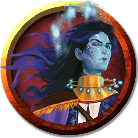

Хастейн
Hastain
Средний Небожитель, хаотично-злой, именной НИП

Класс Доспеха 19 (сияние)
Хиты 82 (15к8 + 15)
Скорость 30 футов, плавая 30 футов
| мод | спас | ||
|---|---|---|---|
| СИЛ | 18 | +4 | +4 |
| ЛОВ | 15 | +2 | +5 |
| ТЕЛ | 12 | +1 | +4 |
| мод | спас | ||
|---|---|---|---|
| ИНТ | 19 | +4 | +4 |
| МДР | 16 | +3 | +6 |
| ХАР | 24 | +7 | +10 |
Навыки Выступление +10, История +7, Магия +7, Убеждение +10
Чувства пассивное Восприятие 13
Языки Общий, Глубинная речь, Драконий, Небесный
Опасность 8 (3900 опыта)
Бонус мастерства +3
Особенности
Сияние. К КД Хастейна добавляется его модификатор Харизмы.
Задержка дыхания. Хастейн может задержать дыхание на 1 час.
Особое снаряжение. Хастейн носит таларит [talarith].
Действия
Мультиатака. Хастейн совершает две атаки Трезубцем.
Трезубец. . Рукопашная или дальнобойная атака оружием: +7 к попаданию, досягаемость 5 фт. или дистанция 20/60 фт., одна цель. Попадание: 7 (1к6 + 4) колющего урона, или 8 (1к8 + 4) колющего урона, если используется двумя руками, плюс 3 (1к6) урона силовым полем, если Хастейн носит таларит [talarith].
Цветной снаряд. Дальнобойная атака заклинанием: +10 к попаданию, дистанция 90 фт., одна цель. Попадание: 22 (5к8) урона вида, который Хастейн выбирает из следующего списка: холод, огонь, электричество и излучение.
Использование заклинаний (псионика). Базовой характеристикой Хастейна является Харизма (Сл спасброска от заклинаний 18). Он может накладывать следующие заклинания, не нуждаясь ни в каких компонентах:
• Неограниченно: волшебная рука [mage hand], свет [light], фокусы [prestidigitation];
• 2/день каждое: воображаемая сила [phantasmal force], переносящая дверь [dimension door];
• 1/день каждое: множественное внушение [mass suggestion], послание [sending].
Призыв голема (перезаряжается после короткого или продолжительного отдыха). Используя свой таларит [talarith], Хастейн призывает голема-копию себя. Дубликат подчиняется командам Хастейна и использует такую же статистику, за исключением того, что он является конструктом, без мировоззрения, у которого нет собственного таларита. Дубликат совершает свой ход сразу после Хастейна. Он исчезает спустя 1 час или когда его хиты опускаются до 0.
Описание
Рейгары — андрогинный народ, эволюционировавший в гуманоидов из вида головоногих моллюсков, похожих на осьминогов. Они обладают биолюминесцентными веснушками и способностью менять цвет кожи. Каждого из них окружает сияние (или ореол). Это магическое проявление представляет собой облако мерцающих и сверкающих частиц, которые произвольно меняют цвет и отражают атаки.
Рейгары не доверяют друг другу с тех пор, как они уничтожили свой родной мир в войне, завершившейся катаклизмом под названием «Завершающий штрих». Разрушение планеты стало кульминацией заговора, направленного на создание самой красивой картины резни, которую когда-либо видела мультивселенная. Рейгары существуют исключительно для занятия искусством и ведения войн. Они считают войну высшей формой художественного выражения. Каждый акт насилия они совершают с намерением создать нечто прекрасное.
Рейгары странствуют по Дикому космосу и Астральному морю в поисках художественного вдохновения, путешествуя на созданных ими симбиотических органических кораблях (см. «Эстетик» в начале этой книги). Каждый рейгар владеет волшебным предметом, называемым таларитом, созданный им, и на который может настроиться только он сам. Если этот предмет потерян или был уничтожен, рейгару требуется 1к10+20 дней, чтобы изготовить новый.